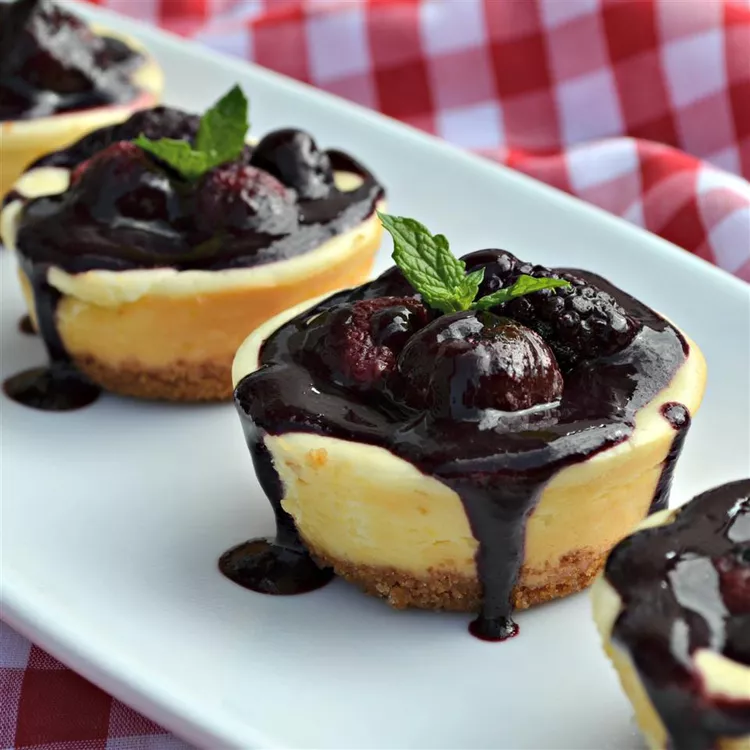

This is a delicious recipe that is perfect for an on-the-go snack. Plus it is a great tread for kids.
Recipe by | Updated on August 14, 2022
Ingredients
Crust:
Filling:
Directions
Preheat oven to 325 degrees F (165 degrees C). Grease a 6-cup muffin pan.
In a medium bowl, mix together the graham cracker crumbs, sugar, and margarine with a fork until combined. Measure a rounded tablespoon of the mixture into the bottom of each muffin cup, pressing firmly. Bake in the pre-heated oven for 5 minutes, then remove to cool. Keep the oven on.
Beat together the cream cheese, sugar, lemon juice, lemon zest and vanilla until fluffy. Mix in the egg.
Pour the cream cheese mixture into the muffin cups, filling each until 3/4 full. Bake at 325 degrees F (165 degrees C) for 25 minutes. Cool completely in pan before removing. Refrigerate until ready to serve.
Nutrition Facts - per serving
Reviews